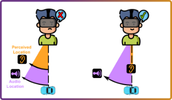
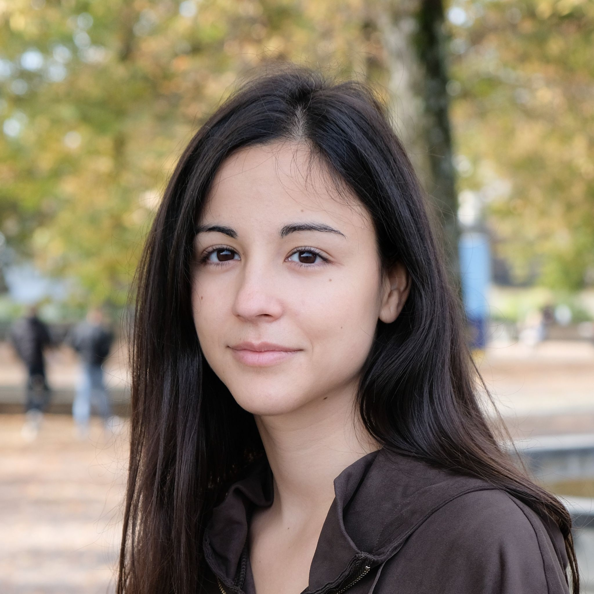
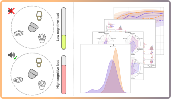
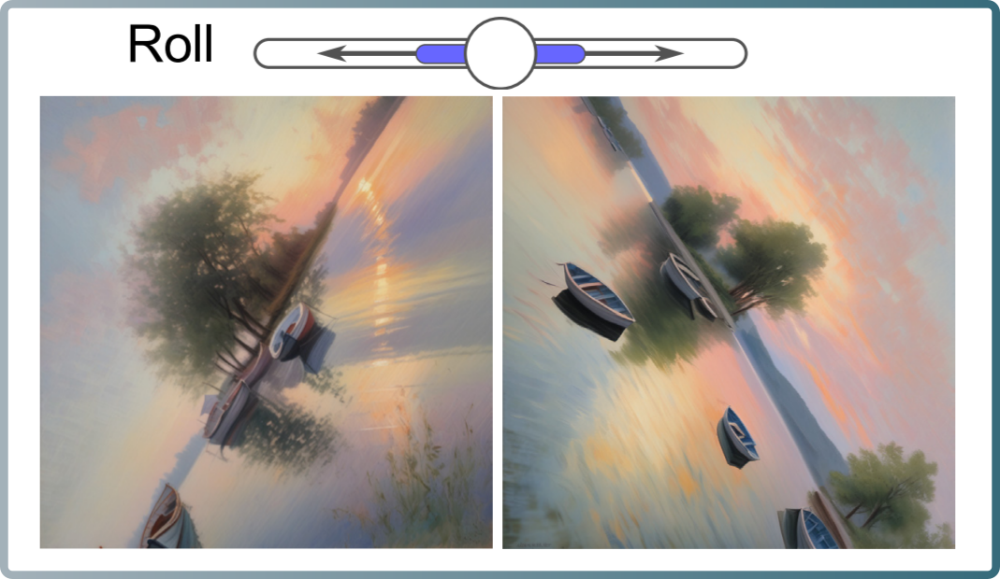
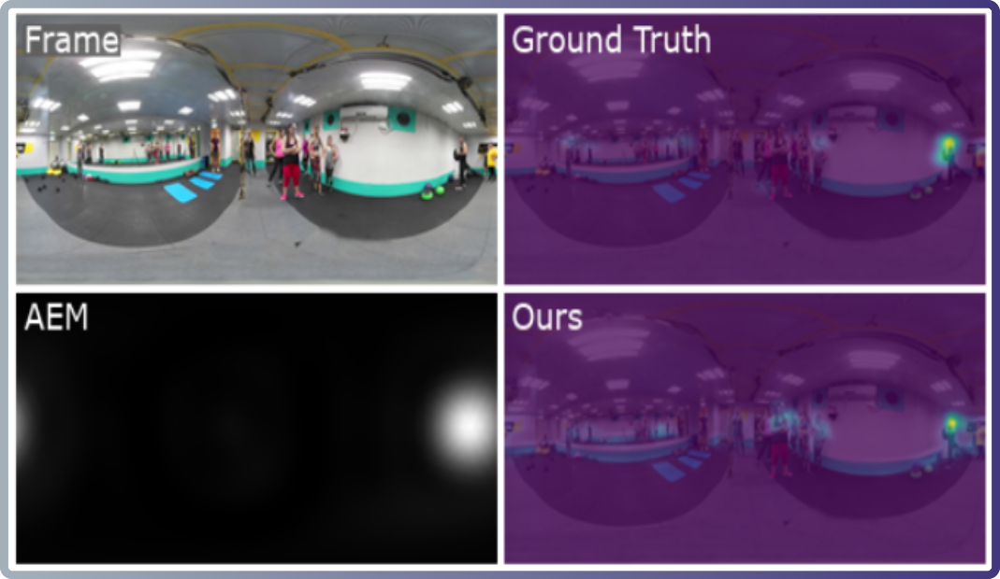
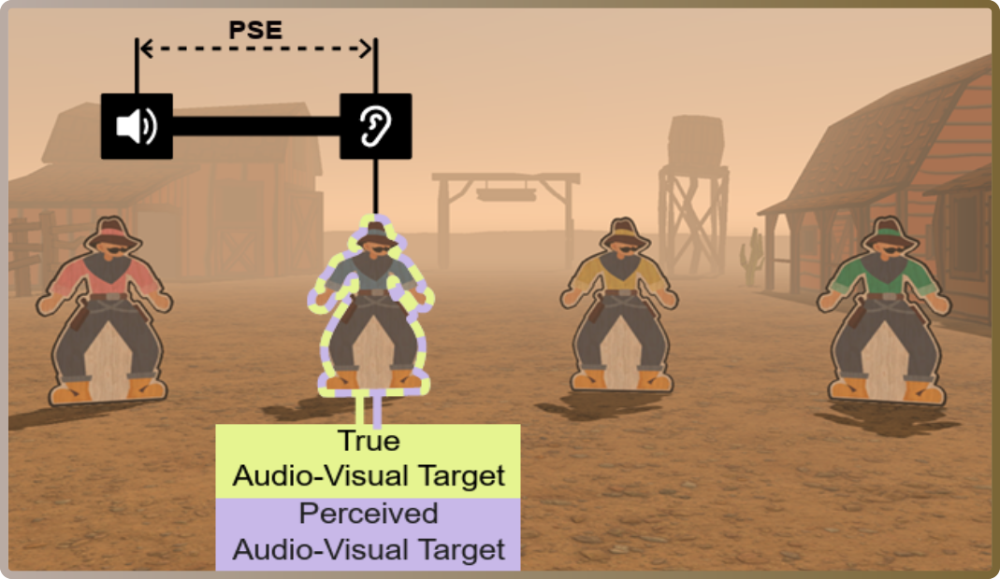
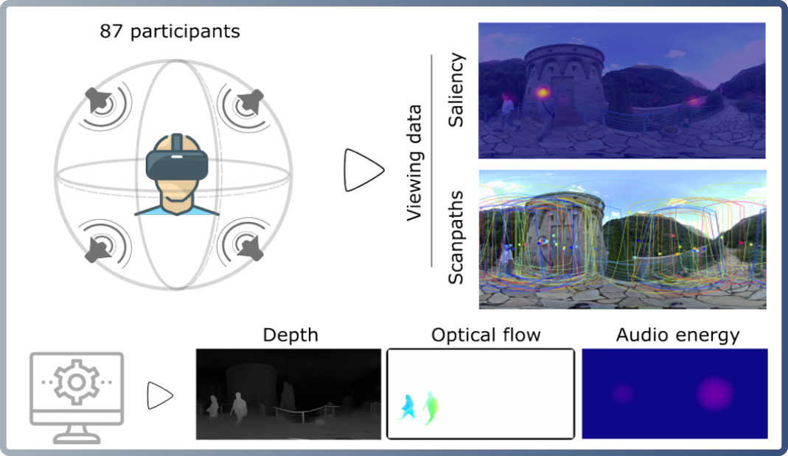
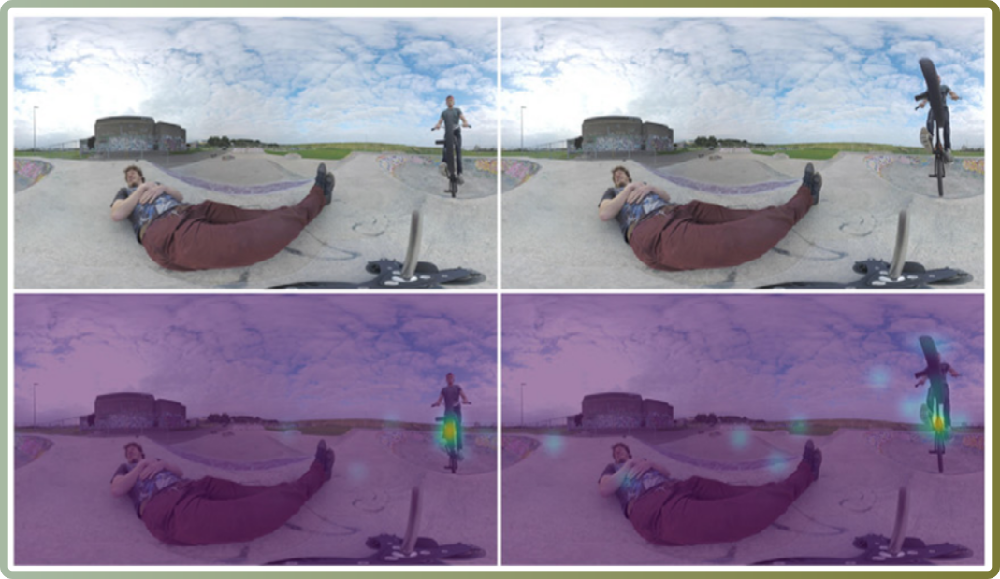
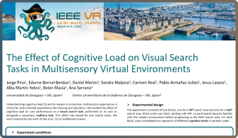
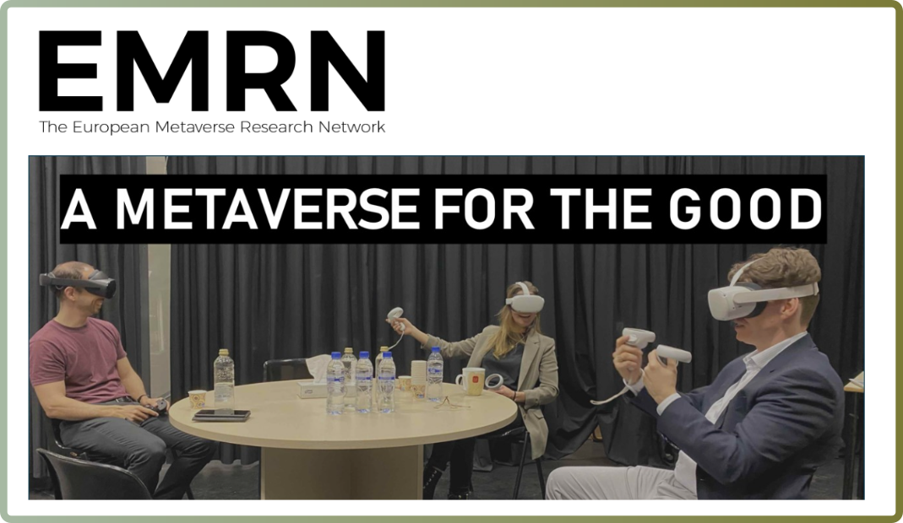

Audiovisual Disparities in VR: Impact on Spatial Perception
Edurne Bernal-Berdun*, Mateo Vallejo*, Qi Sun, Ana Serrano, Diego Gutierrez.
IEEE International Symposium on Mixed and Augmented Reality (ISMAR), 2025.

edurnebernal@unizar.es

PhD Student - Computer Science
I am a PhD candidate at the Graphics and Imaging Lab (Universidad de Zaragoza, Spain) under the supervision of Prof. Belen Masia and Prof. Ana Serrano. Previously, I obtained my Bachelor’s degree in Electronic and Automatic Engineering and my Master’s degree in Robotics, Graphics, and Computer Vision, both at Universidad de Zaragoza, Spain. My main research interests include virtual reality, applied perception, and deep learning, but I am always open to new interesting lines of research. My PhD thesis focuses on modeling human perception in virtual reality environments, and how it can be used to improve virtual reality content generation and visualization.

Edurne Bernal-Berdun*, Mateo Vallejo*, Qi Sun, Ana Serrano, Diego Gutierrez.
IEEE International Symposium on Mixed and Augmented Reality (ISMAR), 2025.

Jorge Pina, Edurne Bernal-Berdun, Daniel Martin, Sandra Malpica, Carmen Real, Alberto Barquero, Pablo Armanac-Julian, Jesus Lazaro, Alba Martin-Yebra, Belen Masia, and Ana Serrano.
IEEE International Symposium on Mixed and Augmented Reality (ISMAR), 2025.

Edurne Bernal-Berdun, Ana Serrano, Belen Masia, Matheus Gadelha, Yannick Hold-Geoffroy, Xin Sun, Diego Gutierrez.
IEEE / CVF Computer Vision and Pattern Recognition Conference (CVPR), 2025.

Edurne Bernal-Berdun, Jorge Pina, Mateo Vallejo, Ana Serrano, Daniel Martin, and Belen Masia.
IEEE International Symposium on Mixed and Augmented Reality (ISMAR), 2024.

Edurne Bernal-Berdun, Mateo Vallejo, Qi Sun, Ana Serrano and Diego Gutierrez.
IEEE TVCG (Proc. IEEE VR), 2024
** Honorable Mention for Best Paper Award (Journal Track) **

Edurne Bernal-Berdun, Daniel Martin, Sandra Malpica, Pedro J. Perez, Diego Gutierrez, Belen Masia, and Ana Serrano.
IEEE TVCG (Proc. ISMAR), 2023

Edurne Bernal-Berdun, Daniel Martin, Diego Gutierrez, and Belen Masia. Computers & Graphics (Proc. CEIG), 2022
Internship at Adobe supervised by Dr. Aaron Hertzmann and Dr. Stephen DiVerdi.
Internship
(Summer 2025)
Internship at Adobe supervised by Dr. Xin Sun.
Internship
(Summer 2024)
Short research stay visiting Prof. Qi Sun.
Visiting Research Scholar
(09/20/22 - 10/05/22)

Poster: The Effect of Cognitive Load on Visual Search Tasks in Multisensory Virtual Environments. Jorge Pina, Edurne Bernal-Berdun, Daniel Martin, Sandra Malpica, Carmen Real, Pablo Armañac-Julián, Jesus Lazaro, Alba Martín-Yebra, Belen Masia, Ana Serrano.

Poster: A Taxonomy for D-SAV360, a Dataset of Gaze Scanpaths on 360º Ambisonic Videos. Edurne Bernal-Berdun, Maria Plaza, Daniel Martin, Sandra Malpica, Belen Masia, Ana Serrano, and Diego Gutierrez.
Poster: Salency prediction in 360º videos with transformers. Mateo Vallejo, Diego Gutierrez, and Edurne Bernal-Berdun.
Talk: SST-Sal: A Spherical Spatio-Temporal Approach for Saliency Prediction in 360º Videos. Edurne Bernal-Berdun, Daniel Martin, Diego Gutierrez, and Belen Masia.
| Year | Conference / Journal | Rol |
|---|---|---|
| 2022 | Expert Systems with Applications | Reviewer |
| 2022 | The ACM Symposium on User Interface Software and Technology (UIST), | Reviewer |
| 2022 | 30th IEEE Conference on Virtual Reality and 3D User Interfaces (IEEE VR) | Reviewer |
| 2023 | 31th IEEE Conference on Virtual Reality and 3D User Interfaces (IEEE VR) | Reviewer |
| 2023 | Transactions on Pattern Analysis and Machine Intelligence | Reviewer |
| 2024 | IEEE International Symposium on Mixed and Augmented Reality (ISMAR) | Reviewer |
| 2024 | 30th ACM Symposium on Virtual Reality Software and Technology (VRST) | Reviewer |
| 2024 | Transactions on Visualization and Computer Graphics | Reviewer |
| 2025 | IEEE International Symposium on Mixed and Augmented Reality (ISMAR) | Reviewer |
| 2025 | Virtual Reality | Reviewer |
Bachelor's Degree in Engineering in Industrial Design and Product Development.
Fall 2024 / Fall 2023 / Fall
| Year | Project | Degree |
|---|---|---|
| June 2024 | Influence of Audio-visual Crossmodal Interactions in Virtual Reality Perception - Mateo Vallejo Domingez | Master's Degree in Robotics, Graphics, and Computer Vision |
| Feb. 2024 | Study and Evaluation of Audiovisual Saliency Prediction Models for 360º video - Jorge Pina Colas | Master's Degree in Robotics, Graphics, and Computer Vision |
| Year | Project | Degree |
|---|---|---|
| June 2024 | Study and Evaluation of Scanpath Prediction Methods for 360º Video - Juan Lorente Guarnieri | Bachelor's Degree in Computer Engineering |
| Sep. 2023 | Development of a saliency model inference tool for Unity - Adrian Yago Hernandez | Bachelor's Degree in Computer Engineering |
| Sep. 2023 | Development of an application to study the effectiveness of using redirected walking methods in VR - Carmen Real | Bachelor's Degree in Computer Engineering |
| June 2022 | Saliency prediction in 360º videos with deep learning - Mateo Vallejo Domingez | Bachelor's Degree in Computer Engineering |